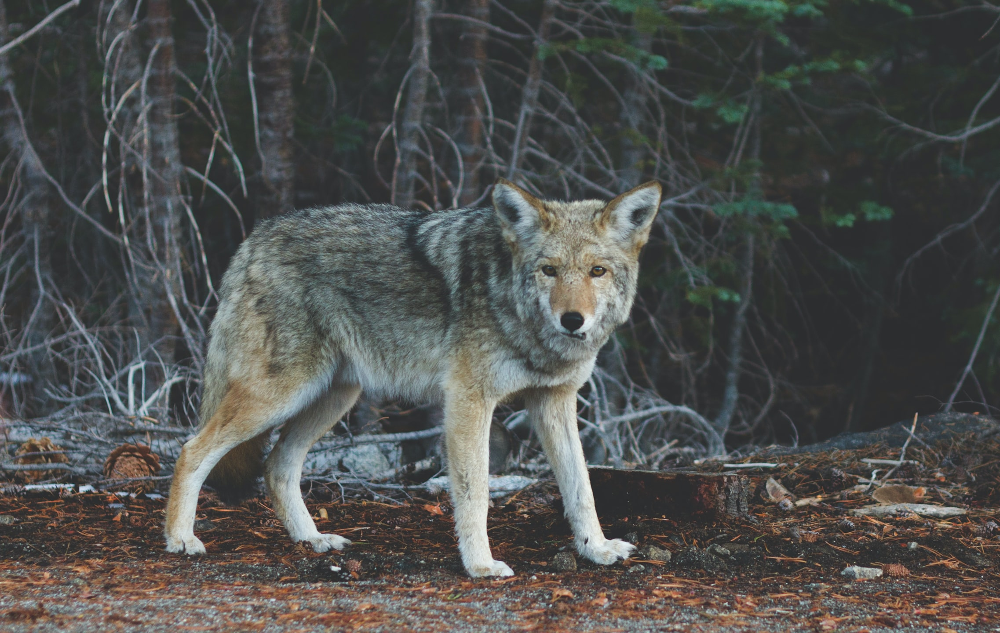

Wolves
What are grey wolves?
Wolves are legendary because of their spine-tingling howl, which they use to communicate. A lone wolf howls to attract the attention of his pack, while communal howls may send territorial messages from one pack to another. Some howls are confrontational. Much like barking domestic dogs, wolves may simply begin howling because a nearby wolf has already begun.

COMMON NAME: Gray Wolf SIZE: Head and body: 36 to 63 inches;
SCIENTIFIC NAME: Canis lupus SIZE: tail: 13 to 20 inches
TYPE: Mammals WEIGHT: 40 to 175 pounds
DIET: Carnivore AVERAGE LIFE SPAN IN THE WILD: 6 to 8 years
GROUP NAME: Pack
SCIENTIFIC NAME: Canis lupus SIZE: tail: 13 to 20 inches
TYPE: Mammals WEIGHT: 40 to 175 pounds
DIET: Carnivore AVERAGE LIFE SPAN IN THE WILD: 6 to 8 years
GROUP NAME: Pack